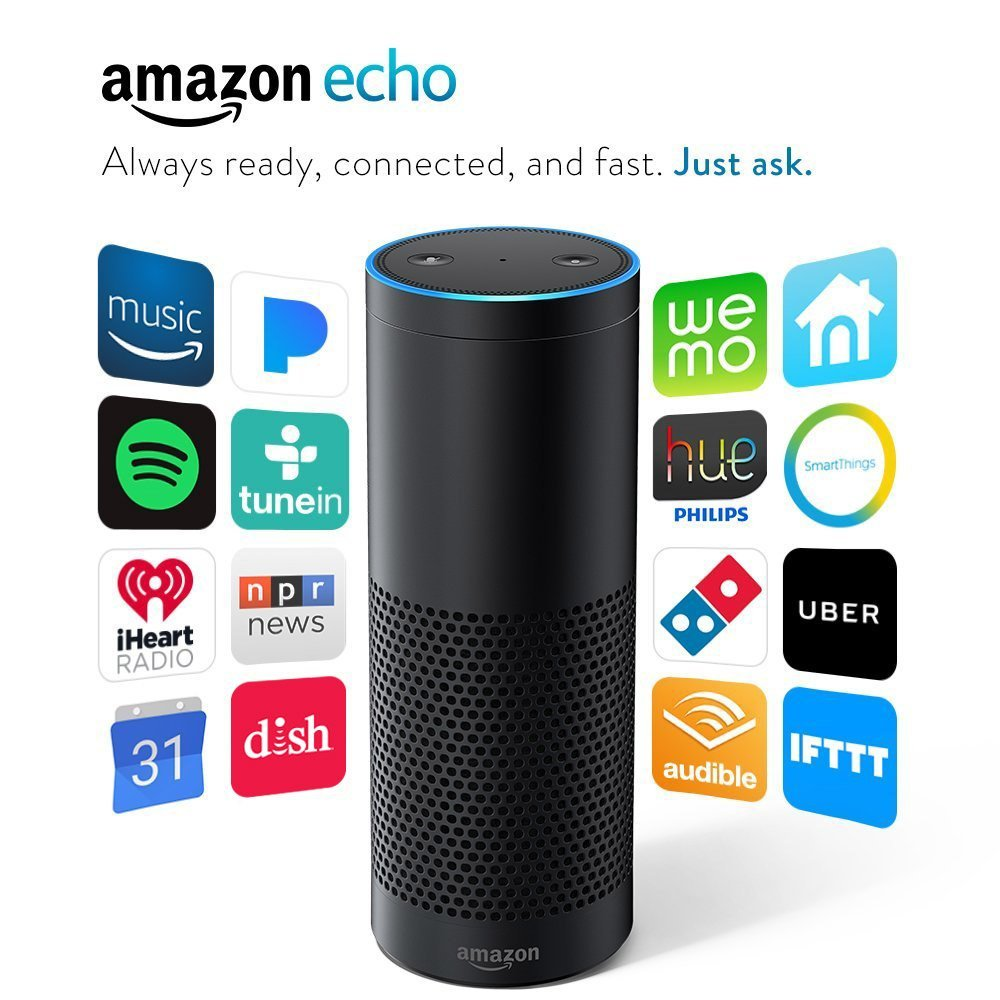

He’s been there for you since day one. No one can compare when it comes to your own father. Father’s Day is a great time to show him how much you appreciate all he’s done for you. Whether your dad is into tech, the outdoors, or something else, there’s a gift on this list every Dad will enjoy.
If your Dad loves tech, get him the Amazon Echo. With voice recognition software, he'll be able to access all of his favorite multimedia through simple voice commands. And if he's really into tech, he can even set it up to control other smart devices in his home - lights, thermostats, and more!
Your Dad will love this comfortable backpacking hammock. It's extremely light and folds up very small for ultimate portability. With this hammock, he'll be able to travel light and set up camp anywhere he wants - a backpacker's dream!
This toolset comes with everything the handyman needs to get going on his next project. Whether he's fixing something around the house or building something new, he'll be in good shape with this toolset!
For the Dad who's always up for something new, this drone makes the perfect gift! It's easy to set up and control. This might just be the beginning of your Dad's new favorite hobby!
For the Dad who lives fashion-forward, this stylish watch will be his new favorite accessory. With its genuine leather band and precision quartz movement, this watch makes a great gift!
If your Dad likes to let loose, this cocktail set makes the perfect gift! He'll be able to mix all of his favorites and even show off his skills for friends and family. The party's just beginning with this fun gift!
For the Dad who enjoys his reading time, this Kindle e-reader will gives him access to thousands of books. With the Kindle, downloading his favorite classics or reading the hot, new bestseller has never been easier!
If your Dad loves to play video games, Tekken 7 is the hottest, newest game out there. With a variety of characters and skills to master, this fighting game will keep him entertained for hours and hours.
If your Dad loves his team, this unique, personalized team photo is the way to go. With a variety of teams to choose from, he'll be able to feel the pride of seeing his name next to the all-time greats.
For the Dad who's always going, this FitBit will allow him to track his daily activity like never before. He'll be able to connect with friends and participate in challenges, exercising along the way.